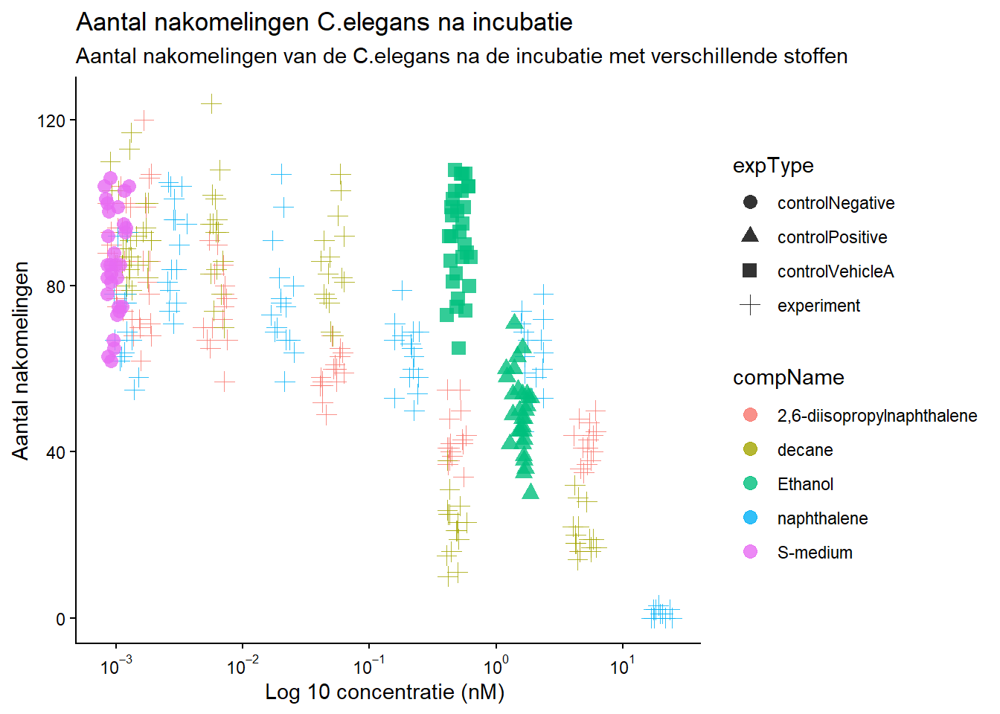
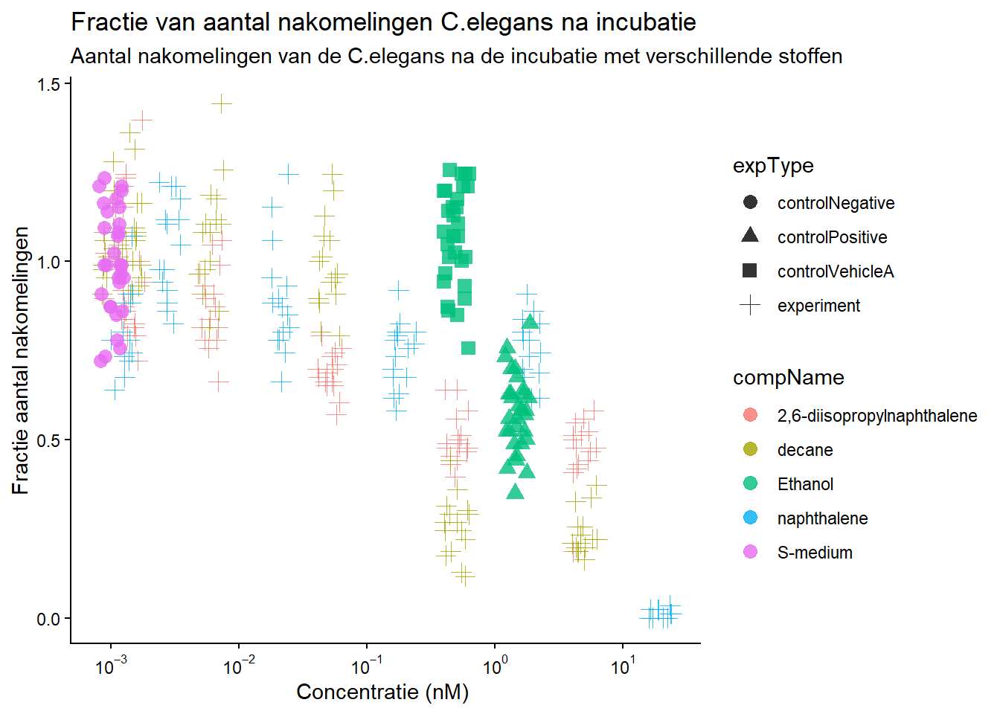

Chapter 7 Reproducable science data analysis
Voor wetenschap is het belangrijk dat experimenten reproduceerbaar zijn. Hieronder valt ook de data analyse. In dit gedeeldte van het portfolio wordt data van een uitgevoerd experiment geanalyseerd om te laten zien dat er reproduceerbaar gewerkt kan worden.
Het doel van het experiment was om te kijken welke stoffen invloed hebben op de nakomelingen van C. elegans Dit werd gedaan door de nematoden bloot te stellen aan verschillende concentraties van verschillende stoffen. Het aantal nakomelingen is geteld. De data uit dit experiment wordt geanalyseerd.
Het experiment is uitgevoerd door J. Louter (INT/ILC) en de data is afkomstig van het HU lectoraat Innovative Testing in Life Sciences & Chemistry.
De belangrijke variabelen in dit experiment zijn:
- “RawData”: de ruwe data
- “compName”: de naam van de stof
- “compConcentration”: de concentratie van de stof
De eerste stap is het inlezen van de data
Celegans_dataset <- read_excel(here::here("raw_data", "Data010", "CE.LIQ.FLOW.062_Tidydata.xlsx"), sheet = 1)Na het inlezen van de data wordt de data gecontroleerd op wat voor type het is.
Er zijn een paar data type die veranderd moeten worden. De ruwe data is als double maar moet een integer worden aangezien het hele getallen zijn. De concentratie is als character weergeven maar moet als numeric omdat het decimalen heeft. Als laatst moet de naam van de stof worden veranderd naar een factor omdat het categorische data is.
#RawData veranderen van dbl naar int
Celegans_dataset$RawData <- as.integer(Celegans_dataset$RawData)
#compName veranderen van character naar factor
Celegans_dataset$compName <- as.factor(Celegans_dataset$compName)
#compConcentration veranderen van character naar numeric
Celegans_dataset$compConcentration <- as.numeric(Celegans_dataset$compConcentration)## Warning: NAs introduced by coercionNa het veranderen van de data wordt de data in een grafiek weergeven.
#Om ervoor te zorgen dat de dataset niet door 0 heen gaat voor de output van de grafiek
Celegans_dataset_no.na$compConcentration_offset <- Celegans_dataset_no.na$compConcentration + 0.001
#Plot met de aangepaste C.elegans data met het gebruik van geom jitter
Celegans_plot <- ggplot(data = Celegans_dataset_no.na, aes(x = compConcentration_offset, y = RawData)) +
geom_jitter(aes(color = compName, shape = expType), size = 3, alpha = 0.8, width = 0.1, height = 0) +
scale_x_log10(labels = label_log(digits = 2)) +
labs(title = "Aantal nakomelingen C.elegans na incubatie",
subtitle = "Aantal nakomelingen van de C.elegans na de incubatie met verschillende stoffen",
y = "Aantal nakomelingen",
x = "Log 10 concentratie (nM) ") +
theme_classic()
Celegans_plot## Warning: Removed 1 row containing missing values or values outside the scale range (`geom_point()`).
Normalisatie: Als laatste stap wordt de data genormaliseerd op een manier waardoor de negatieve controle gelijk is aan 1 en de rest wordt uitgedrukt als een fractie daarvan. Dit wordt gedaan zodat de data makkelijker kan worden vergeleken met de negatieve controle om een verschil te zien in de grafiek.
Eerst wordt de data veranderd zodat de negatieve controle gelijk is aan 1 en de ander data een fractie daarvan.
#Berekenen van het gemiddelde van de negatieve controle
Celegans_negative <- Celegans_dataset_no.na %>%
filter(expType == "controlNegative")
mean_control_negative <- mean(Celegans_negative$RawData)
#Gemiddelde van de negatieve controle is 85.9
Celegans_dataset_norm <- Celegans_dataset_no.na
#Zorg ervoor dat de data 1 is door alle waarden door het gemiddelde te delen
Celegans_dataset_norm$RawData <- (Celegans_dataset_norm$RawData / mean_control_negative)Daarna wordt er een grafiek gemaakt van de genormaliseerde dat (AI werd gebruikt om te helpen met de berekeningen en de code om de data te analyseren)
Celegans_dataset_norm$compConcentration_offset <- Celegans_dataset_norm$compConcentration + 0.001
Celegans_plot_normalized <- ggplot(data = Celegans_dataset_norm, aes(x = compConcentration_offset, y = RawData)) +
geom_jitter(aes(color = compName, shape = expType), size = 3, alpha = 0.8, width = 0.1, height = 0) +
scale_x_log10(labels = label_log(digits = 2)) +
labs(title = "Fractie van aantal nakomelingen C.elegans na incubatie",
subtitle = "Aantal nakomelingen van de C.elegans na de incubatie met verschillende stoffen",
y = "Fractie aantal nakomelingen",
x = "Concentratie (nM) ") +
theme_classic()
Celegans_plot_normalized## Warning: Removed 1 row containing missing values or values outside the scale range (`geom_point()`).
Er zijn verschillende controles aanwezig in het experiment.
Positieve controle: De positieve controle is de conditie waarbij er een positief resultaat wordt verwacht. In dit geval zal de controle wel een effect hebben op het aantal nakomelingen van de C.elegans
Negatieve controle: De negatieve controle is de conditie waarbij er een negatief resultaat wordt verwacht. In dit geval zal de negatieve controle geen effect hebben op het aantal nakomelingen van de C.elegans
Vehicle controle: De vehicle controle geeft aan of de substantie waarmee de getetste stoffen zijn opgelost invloed heeft op het experiment.
Uit de bovenstaande grafiek is te zien dat de positieve en vehicle controle voor het experiment Ethanol is en de negatieve controle S-medium. Dit kan ook gecheckt worden met de volgende code:
#Check wat de negatieve controle is voor het experiment
Celegans_dataset_no.na %>% filter(expType == "controlNegative") %>% select(compName, compConcentration) %>% head(1)## # A tibble: 1 × 2
## compName compConcentration
## <fct> <dbl>
## 1 S-medium 0#Check wat de vehicle controle is voor het experiment
Celegans_dataset_no.na %>% filter(expType == "controlVehicleA") %>% select(compName, compConcentration) %>% head(1)## # A tibble: 1 × 2
## compName compConcentration
## <fct> <dbl>
## 1 Ethanol 0.5#check wat de positieve controle is voor het experiment
Celegans_dataset_no.na %>% filter(expType == "controlPositive") %>% select(compName, compConcentration) %>% head(1)## # A tibble: 1 × 2
## compName compConcentration
## <fct> <dbl>
## 1 Ethanol 1.5Stappenplan voor vervolgonderzoek
Als vervolg experiment zou een dosis response analyse uitgevoerd kunnen worden. Deze analyse kan worden uitgevoerd in R, waarbij de drc package gebruikt kan worden. Bij de workflow met deze package moet eerst het response type bepaald worden. Nadat het type response is gekozen wordt het gemiddelde berekend en weergeven. Om dit te genereren kunnen ingebouwde dose-response model gebruikt worden, waarbij de vorm van de curve wiskundig berekend wordt. Hierna kan een schatting van de effectieve doses berekend worden en daarna kunnen voorspellingen berekend worden om te kijken naar wat voor response de concentraties die niet gemeten zijn hebben (source). Na deze stappen kan er gekeken worden naar de EC50 (effectieve dosis voor 50% van de populatie), LD50 (dodelijke dosis voor 50% van de populatie) en IC50 (remmend biologisch effect bij 50% van de populatie).